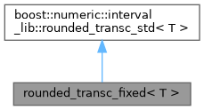

#include <Intervals.hpp>
Inheritance diagram for rounded_transc_fixed< T >:

Collaboration diagram for rounded_transc_fixed< T >:

Static Public Member Functions | |
| static T | asinh_down (const T &x) |
| static T | asinh_up (const T &x) |
| static T | acosh_down (const T &x) |
| static T | acosh_up (const T &x) |
| static T | atanh_down (const T &x) |
| static T | atanh_up (const T &x) |
Member Function Documentation
◆ acosh_down()
template<class T >
|
inlinestatic |
◆ acosh_up()
template<class T >
|
inlinestatic |
◆ asinh_down()
template<class T >
|
inlinestatic |
◆ asinh_up()
template<class T >
|
inlinestatic |
◆ atanh_down()
template<class T >
|
inlinestatic |
◆ atanh_up()
template<class T >
|
inlinestatic |
The documentation for this struct was generated from the following file:
- /home/joshr/Documents/Projects/ZonoOpt/include/zonoopt/Intervals.hpp